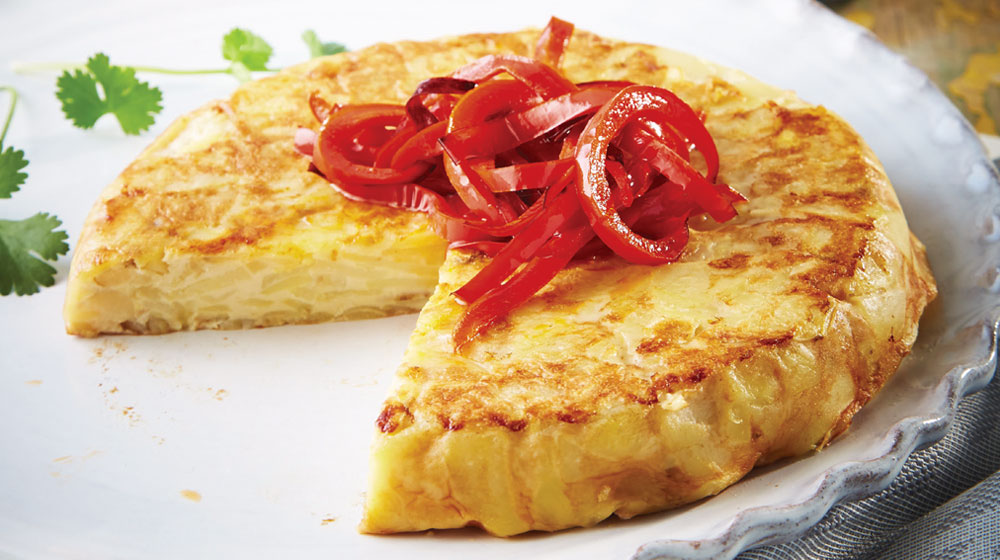

Tortilla española

- Preparación:35 minutos
- Tipo de receta: Plato principal
- Dificultad baja
Descripción:
La tradicional receta de tortilla de patatas o tortilla española, un plato básico de la cocina española a base de patatas, huevo y cebolla.
Este es una de las recetas más sencillas y más conocidas de la cocina española, siendo un plato perfecto para la cena,
como pintxo o picoteo y también para bocadillos y meriendas.
Ingredientes:
- 6 huevos
- 1 cebolla pequeña
- 3 patatas (600 gr)
- 1 pimiento verde
- 2 vasos de aceite de oliva
- una hoja de perejil
- Sal y pimienta
Preparación:
- Pela y pica la cebolla en dados medianos. Limpia el pimiento verde, retírale el tallo y las pepitas y córtalo en dados.
- Si las patatas estuvieran sucias, pásalas por agua. Pélalas, córtalas por la mitad a lo largo
y después corta cada trozo en medias lunas finas de 1/2 centímetros.
- Introduce todo en la sartén, sazona a tu gusto y fríe a fuego suave durante 25-30 minutos.
- Retira la fritada y escúrrela. Pasa el aceite a un recipiente y resérvalo.
Limpia la sartén con papel absorbente de cocina.
- Casca los huevos, colócalos en un recipiente grande y bátelos. Sálalos a tu gusto, agrega la fritada de patatas,
cebolla y pimiento y mezcla bien.
- Coloca la sartén nuevamente en el fuego, agrega un chorrito del aceite reservado y agrega la mezcla.
Remueve un poco con una cuchara de madera y espera (20 segundos) a que empiece a cuajarse.
- Separa los bordes, cubre la sartén con un plato de mayor diámetro que la sartén y dale la vuelta.
Échala de nuevo para que cuaje por el otro lado.
Consejos:
Si quieres hacer la tortilla más esponjosa, puedes añadir a los huevos un chorrito de leche o nata líquida.
¡Buen Provecho!